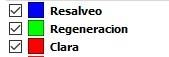

GUIA DE MANEJO
SilviLiDAR procesa archivos LiDAR en formato LAZ o LAS como los que pueden descargarse de la web del CNIG http://centrodedescargas.cnig.es/CentroDescargas/buscadorCatalogo.do
Podemos descargar los archivos que necesitemos haciendo una búsqueda por término municipal y guardarlos en una carpeta en el equipo cuya ruta no debe contener espacios en blanco.
Una vez instalado conforme al apartado anterior, clicamos en SilviLiDAR y se nos abrirá una ventana.
En ella es imprescindible seleccionar la carpeta en la que se encuentran los archivos LAZ o LAS que queremos procesar.Debe estar en una ruta sin espacios en blanco ni caracteres no convencionales tipo ñ o tíldes.
El resto de opciones no es necesario modificar ya que vienen rellenados por defecto con valores estándar.
Clicamos en Aceptar y se ejecutará el script.
Lo que sucede a continuación es el análisis de los archivos LiDAR mediante el programa FUSION y posteriormente el análisis de cada celda con los parámetros introducidos.
El resultado, si se han dejado los valores por defecto, es el siguiente:
Un shape de polígonos llamado Teselas con los estados de desarrollo de la masa y los posibles tratamientos.
Un ráster con la altura de cada celda hm, en metros.

Se pueden ampliar los resultados si antes de ejecutar el Silvilidar seleccionamos el botón PERSONALIZAR DATOS DE SALIDA.
Se pueden seleccionar las capas que queremos que genere, las tres primeras, o que las cargue ya que son generadas siempre, las cinco últimas.

Las tres primeras llevan asociado más procesamiento por lo que llevarán más tiempo, alrededor de 30 segundos por capa y cuadricula de 2x2 km.
Clara, en el que se ha simplificado el resultado para que pueda emplearse de un modo más cómodo esta información aglutinando las zonas que en las que da clara y tienen una superficie mínima de actuación.
Otro shape de polígonos llamado resalveo obtenido del mismo modo que el anterior. Y otro shape de polígonos llamado regeneración donde puede que exista necesidad de cortas de regeneración.
Las siguientes no implican más tiempo de procesado.
Rc: Razón de Copa, en porcentaje.
Lc: Longitud de Copa, en metros.
Hbc: Altura de la base de la copa, en metros.
Fcc: Fracción de Cabida Cubierta, en metros.
Hm: Altura Media, en metros y viene activada por defecto.
PROYECTAR DATOS LIDAR
Los datos LiDAR están tomados en una fecha concreta. Por lo que los análisis que se pueden hacer son referidos a cómo estaba la vegetación en esa fecha. Como es probable que nos interese estimar el estado actual y sus necesidades, se puede inferir un crecimiento a la vegetación.
Incremento en altura
Es el crecimiento en altura de la vegetación estimado desde la fecha del vuelo LiDAR hasta la fecha a la que se pretenden proyectar los datos. Por lo tanto habrá que dar el resultado de multiplicar el crecimiento anual en altura por el número de años pasados desde el vuelo. Las unidades son metros.
Si se pone cero (0) el resultado será con los datos LiDAR, en la fecha del vuelo.
Incremento en fcc
Continuando con la proyección en el tiempo de los datos LiDAR, si esta se produce, lo hará tanto creciendo en altura como cerrando las copas. Este incremento de la FCC en porcentaje es el que se debe indicar aquí.
Si se ha considerado el crecimiento en altura cero el valor que pongamos de crecimiento de fcc no se tendrá en cuenta ya que no se proyectan los datos al futuro.
Del estudio en distintas zonas se ha inferido como valor de crecimiento aceptable el 2,5 % anual. Tanto el incremento en altura como en FCC están relacionado por lo que por cada incremento de 1 m de altura se incrementa la fcc en 8,33%, aunque puede variarse esa cantidad.
CONFIGURACIÓN DE PARAMETROS
Para decidir en qué tipo de masa ampliado se encuentra cada celda se deben comparar los datos extraídos del LiDAR para dicha celda con unos umbrales. Dichos umbrales por defecto se han puesto en función de la experiencia.
Fccbaja
La Fracción de cabida cubierta baja hace referencia al umbral por debajo del cual no se considera que en esa celda exista espesura, es decir, se trataría de una masa clara.
Fccterrazas
Es la fracción de cabida cubierta a partir de la cual se entiende que puede existir competencia suficiente para hacer claras, aunque ésta no sea homogénea porque se trate de masas con distribución no uniforme de los árboles (como son las repoblaciones por fajas o terrazas, con mucha mayor competencia dentro de la faja que en las entrefajas)
Viene determinado por una función calculada de forma experimental.
Fccmedia
Fracción de cabida cubierta mínima para poder efectuar resalveo en el monte bajo.
Fccalta
Es la fracción de cabida cubierta a partir de la cual entendemos que la cobertura es completa y se pueden efectuar cortas si el resto de indicadores de competencia también lo muestran.
Hmontebravoe
Es la altura de arbolado por debajo de la cual se considera que no permite alcanzar diámetro suficiente para el aprovechamiento de leñas.
Hmontebravo
Es la altura de arbolado por debajo de la cual se considera que no es imprescindible realizar un tratamiento selvícola
Hselvicolas
Es la altura máxima más adecuada para realizar un tratamiento selvícola (tipo poda, al menos)
Hclaras
Es la altura por encima de la cual se entiende que se alcanza en monte alto el estado
“desarrollado”
Hclaras2
Es la altura por encima de la cual ya es más posible tener en monte alto una masa madura
Hbcminima
Es el valor de la altura de la base de la copa por debajo de la cual es factible hacer poda baja en el arbolado
HbcdesarrolladoEs el valor de la altura de la base de la copa por encima de la cual se puede realizar una clara.
Rcclaras
Es el valor de la razón de copa en porcentaje por debajo del cual se entiende que hay competencia suficiente para realizar una clara.
Rcextremo
Es el valor de la razón de copa en porcentaje por debajo del cual se entiende que es posible (o conveniente) realizar una corta de regeneración si el arbolado después de una clara no es capaz de recuperarse.
ANALISIS DE LOS RESULTADOS
Se obtiene una clasificación del territorio en base al estado de desarrollo del arbolado y la posibilidad de actuaciones en él (una aproximación a lo que llamamos tipos de masa ampliados), que aparece coloreada y que es la siguiente:
 <
<
De la misma forma aparecen, si se selecciona, zonas agrupadas de posible actuación con la siguiente simbología.

Y la altura media (hm), fracción de cabida cubierta(fcc), razón de copa (rc), longitud de copa (lc) y altura de la base de la copa (hbc) con la siguiente simbología.